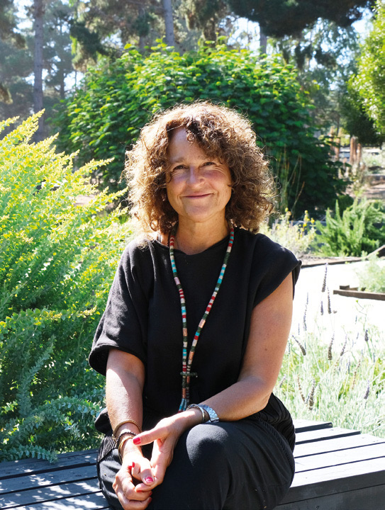
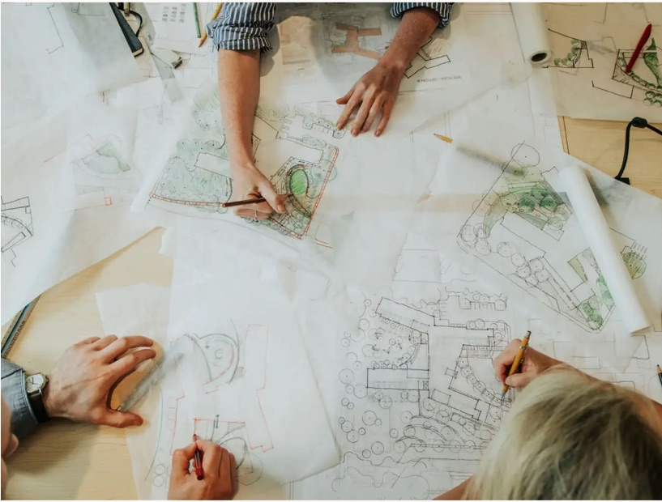
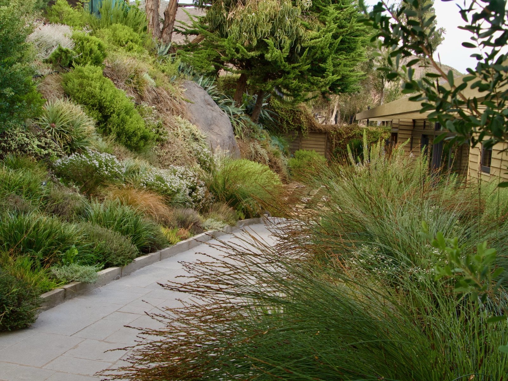
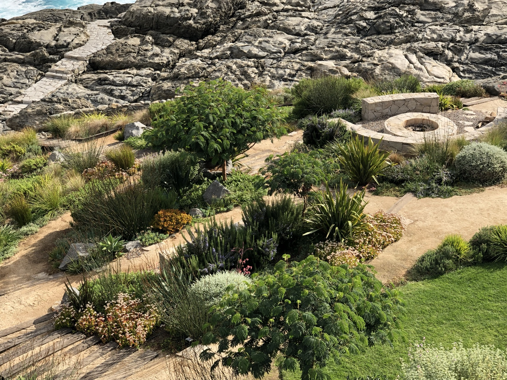
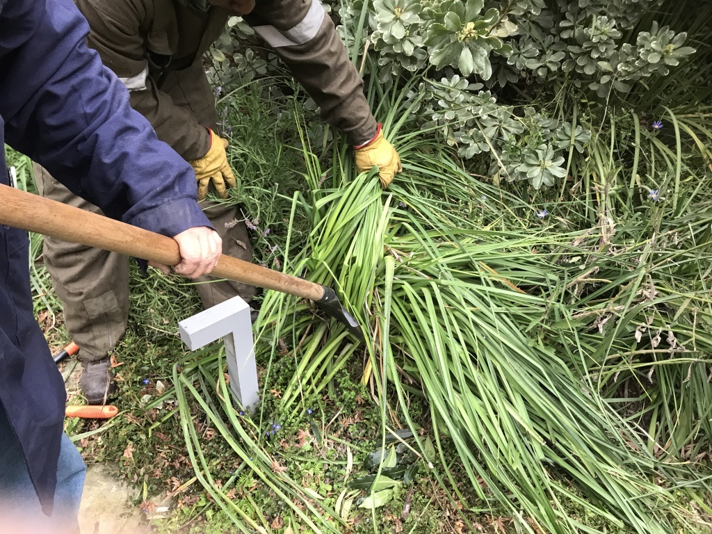

Carola PagePaisajista
Ingeniera Agrónoma de la Pontificia Universidad Católica de Chile, con un postítulo en Diseño y Manejo de Áreas Verdes, Carola Page lleva más de dos décadas proyectando jardines en paisajes muy distintos de Chile y en el extranjero.
Su trabajo se mueve por una búsqueda que no se detiene: cada encargo es la ocasión de probar formas, materialidades, colores y especies que no había usado antes. Lo que permanece es el sello — el equilibrio entre lo formal y lo rústico.
Cada proyecto se aborda de manera integral. El diseño vegetal y los elementos construidos se piensan juntos, en función de quienes van a habitar el jardín y de las condiciones propias del lugar. El objetivo es que naturaleza y arquitectura terminen conversando en un paisaje armónico y sostenible, capaz además de dar cabida a la vida silvestre.
Cada jardín es una oportunidad para explorar nuevas formas de diseño, integrando naturaleza y arquitectura para crear espacios únicos, pensados para quienes los habitan.
Trayectoria
- Expo Jardines 2026
- Charla en el Festival de la Rosa
- Charla en Expo Jardines, Lo Matta
- Días de Campo en Las Cardillas
- Festival de las Rosas
- «Jardín de Playa», Exposición Jardinera
- Clases del Magíster, Universidad Católica
- Clase en el Diplomado de Paisajismo, Universidad Católica
- «Jardín de Greda», Exposición Jardinera
- «Agua de Piedra», Exposición Jardinera
- «Simple», Exposición Casa Mater
- Charla en INACAP
- Casa Mater, Quinta Normal
- «Sobrerelieve», Casa Mater
- Casa Mater — primer lugar
Más que imponer una forma, buscamos descubrir y expresar el carácter único de cada lugar, creando paisajes que dialogan con su entorno y adquieren profundidad, belleza y significado con el paso del tiempo.
Nuestra oficina
La oficina funciona con un equipo estable y una red amplia de especialistas que se suman según lo que cada proyecto necesita. Un jardín puede pedir un ingeniero en riego, un maestro en piedra, un carpintero o un vivero capaz de producir una especie difícil de conseguir: cada uno entra cuando corresponde y se retira cuando su parte está hecha.
Ese modo de trabajar permite sostener proyectos de escalas muy distintas sin perder el control del detalle. Nada se delega a ciegas: el diseño, la elección de las plantas y la ejecución de las obras se siguen de cerca, en terreno, hasta que el jardín queda funcionando.
Trabajamos junto a arquitectos, constructores y propietarios desde etapas tempranas. Mientras antes entre el paisaje en la conversación, más natural resulta el encuentro entre la casa y el terreno.

Qué hacemos
Carola Page desarrolla jardines y paisajes que buscan revelar el carácter particular de cada lugar, equilibrando la sensibilidad y la visión de un artista con el rigor, el conocimiento y la atención al detalle propios del oficio. Cada proyecto nace de una observación profunda del entorno, reconociendo en la luz, el clima, la topografía, la vegetación existente y las formas de habitar las claves para construir una propuesta única y vinculada a su contexto.

Diseño
de paisajeEl proyecto completo del jardín — trazado, recorridos y diseño vegetal — a partir de la luz, el suelo y la vegetación que ya están en el lugar.

Construcción
La ejecución en obra de lo proyectado: movimiento de tierra, plantación, riego y las estructuras que sostienen el jardín.

Mantención
y AsesoríaEl acompañamiento después de la entrega, para que el jardín llegue a su madurez como fue pensado. También asesorías puntuales sobre jardines ya existentes.

Obras
de exteriorPiscinas, muros, soleras, jardineras, gradas y bancos en piedra, hormigón o madera, diseñados junto con la vegetación y no como un añadido.